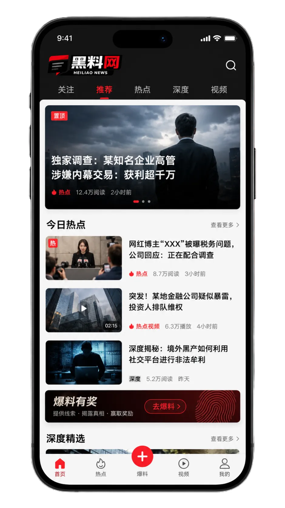

热点越快，越需要把来源、语境与事实边界放在前面
黑料网从公开资料出发，围绕娱乐行业、影视综艺、网络内容趋势与社会话题进行结构化整理。我们不把未经核实的说法写成事实，也不以虚构热度或夸张标题替代证据；面对争议内容，优先展示能够说明来源、时间和上下文的信息。
不展示虚构热度值，以公共关注价值、信息完整度和后续更新需要进行整理。
围绕作品公开信息与行业趋势展开，不复制受版权保护的长篇内容。
预告能说明题材、气质和部分角色关系，但不能替代完整成片体验。
站内阅读 →档期、主创阵容与正式物料应以作品方公开信息为准，避免混入未经确认的安排。
站内阅读 →剪辑呈现服务于节目叙事，不能直接推导嘉宾私下关系或现实结论。
站内阅读 →对作品的喜好存在个体差异，讨论可聚焦可见内容而非人身攻击。
站内阅读 →幕后物料能补充创作背景，但仍应与最终作品表现分开评价。
站内阅读 →短剧、长剧、院线与网络发行各有不同节奏，趋势判断需要更长时间观察。
站内阅读 →观察短视频、直播、公开账号回应与平台规则。
稳定主题让用户更容易理解账号定位，但长期价值仍取决于内容质量与合规表达。
阅读 →促销表达、售后条件和平台规则应以可留存的公开说明为准。
阅读 →个别创作者的经验可以作为观察样本，但不应替代平台正式规则。
阅读 →核对原始文本、发布时间和回应对象，能显著减少断章取义。
阅读 →好的内容既能让人愿意打开，也应避免暗示不存在的结论。
阅读 →转发、剪辑和配文会改变原内容的理解路径，回到原始发布更稳妥。
阅读 →从网络安全、消费提醒与个人信息保护切入公共议题。
热点信息经常伴随截图、照片、聊天片段和账号资料传播。即使某段内容来自公开页面，也不代表所有个人信息都适合再次聚合与扩散。转发前应检查是否包含电话号码、住址、证件、未成年人信息或其他无关隐私；讨论公共事件时，尽量把注意力放在可核实事实与制度问题上，而不是把普通个人推向不可控的曝光。对于来源不明、缺少上下文或涉及敏感资料的内容，最稳妥的做法是停止继续传播并寻找可靠公开来源。
安全信息应以平台官方说明和明确操作指引为准，不轻信要求提供验证码或支付资料的内容。
价格、适用范围、退换条件和有效期应在正式页面中核对，避免只凭二手截图判断。
不同文本承担不同功能，评论可以有立场，但事实判断必须有可追溯来源。
减少人身攻击和标签化表达，把分歧落在观点与证据上，通常更有助于理解问题。
把公开时间线、回应与待核实点放在同一框架中。
确认最早可追溯来源、完整内容和出现语境，避免只保存经过多次转发的片段。
公开回应是重要材料，但需要与原始问题一一对应，不能把未回应部分自动视为已经解释。
对于无法确认的内容明确标注“尚无可靠公开信息”，不以网友转述替代证据。
重复传播旧内容会制造“事件仍在变化”的错觉，更新应说明哪些是真正的新信息。
在结尾给出明确状态，帮助读者理解哪些问题已有依据，哪些仍不能下结论。
从来源、时间、语境和证据链入手，降低误读与误传。
传播规模只能说明关注度，不能替代原始来源、公开文件或可核对材料。若只有重复转述，公开资料不足以支持结论。
依据：信息来源层级与可追溯性截图可能来自真实文本，但脱离上下文后含义可能改变。核查时应查看原文、发布时间与完整段落。
依据：原始文本与上下文规则曾经有效不等于当前仍有效。需要核对平台最新公开页面与适用时间，避免用旧信息指导当前操作。
依据：发布时间与版本状态评论可以基于事实提出观点，但观点本身不等于事实。阅读时应区分报道、采访、评论和网友表达。
依据：文本类型与表达主体对比二次转述，原始公开来源通常能提供更完整的时间、主体与上下文，是核验流程中的基础步骤。
依据：公开来源核验原则按时段整理公开信息，不伪造精确发布时间。
关注内容变化与讨论方式，不展示虚假参与人数。
作品宣发、公开活动和媒体传播方式持续变化，讨论应以可核对公开资料为基础。
查看话题 →把作品评价与对真实个人的推断分开，让讨论回到文本、制作与观看体验。
查看话题 →系列化、垂直化与多平台分发成为常见选择，同时更需要理解各平台规则。
查看话题 →涉及商品、账号与内容治理的规则应以平台正式说明为准，避免依赖过时截图。
查看话题 →公共讨论也要避免扩散与议题无关的私人信息，尤其是未成年人和敏感资料。
查看话题 →观察原始发布、二次转述、剪辑与评论如何改变信息语境。
查看话题 →事实报道、评论、采访与网友观点应分层阅读，减少把立场当证据的误读。
查看话题 →把质疑落在信息与逻辑上，避免侮辱、煽动与针对个人的围攻。
查看话题 →投稿只应包含能够说明来源的公开信息，并清楚区分亲眼所见、公开资料和个人判断。请不要提交身份证件、银行卡资料、家庭住址、私人联系方式、未经授权的私密影像、私人聊天记录或未成年人个人资料，也不要利用投稿进行勒索、报复、造谣或传播违法信息。对于来源不清、无法合理核验、明显侵犯他人隐私或存在版权与名誉风险的材料，平台应拒绝使用。提交线索的价值在于帮助编辑找到可验证的公开信息，而不是制造对真实个人的压力或曝光。
查看投稿说明了解移动阅读与使用设置，不提供虚构下载地址。

黑料网APP服务说明覆盖移动端资讯浏览、频道快速切换、24小时内容查看、热门话题整理、阅读记录说明、隐私设置、安全提醒与使用帮助。页面仅介绍功能与使用边界，不模拟真实账号体系、登录注册、消息推送或下载链路。涉及权限时，建议遵循最小必要原则，只开启与明确功能直接相关的权限，并定期检查系统设置。
通过重点摘要与栏目入口快速理解当天值得关注的公开信息。
在娱乐、影视、网红、社会、追踪与核查之间快速切换。
按时段查看整理结果，不制造分钟级实时感。
强调隐私、安全与清晰可控的阅读体验。
事实边界与隐私边界同样重要。
优先核对原始发布主体、完整页面和公开文件；二次转述必须说明来源层级，无法追溯的内容不作为确定事实。
新闻事实、当事方说法、媒体评论和网友观点分别标注，不把编辑判断包装成已经发生的客观事件。
公共议题讨论不得扩大传播无关私人信息，尤其是地址、证件、联系方式、未成年人资料和未经授权的私密影像。
争议信息要给出语境、来源和不确定性说明，避免用单一截图、匿名传闻或情绪化转述形成定性。
发现事实错误、过时信息或表述可能造成明显误读时，应及时修正，并让读者能够理解修正后的准确信息。
标题应准确概括正文，不使用没有充分依据的“实锤”“全网封杀”等结论性或煽动性表达。
黑料网关注娱乐资讯、影视综艺、网络话题和社会观察，通过公开资料整理、事件时间线与事实核查帮助读者理解热点。我们在内容中区分公开事实、当事方回应、媒体报道和观点讨论，不用传播规模替代证据，也不把未经核实的说法包装成结论。对于涉及真实个人的争议，尤其重视隐私、未成年人保护和错误更正；涉及版权内容时，只做必要引用与概述。读者在面对快速变化的信息时，也应结合来源、时间和上下文独立判断，不扩散缺少依据或涉及无关私人信息的内容。平台希望提供的是更清楚的阅读路径，而不是更激烈的情绪。
了解黑料网 →